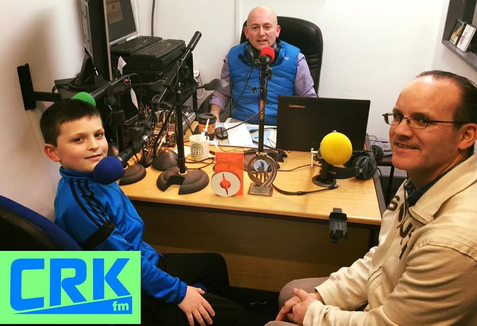
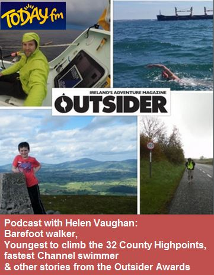
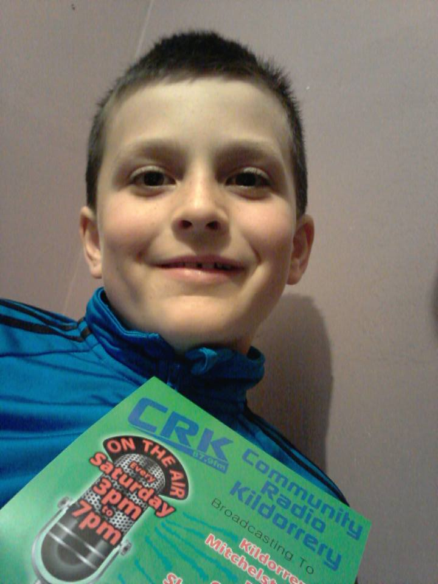

Radio Clips
From 1:09 Joe Sherlock talks to Dillon about The County Highpoints, The Gribboneer of the year and other achievements. Watch out for the 9 yr old's comments;
"the sandwiches are just different outside, just way nicer, Outdoor Sanwiches"
"Just find something that you like and just keep going"
Thanks CRK fm and thanks Joe

Barefoot walker, fastest Channel swimmer, 9 year old climbs all county highpoints of Ireland & other stories from the Outsider Awards With Helen Vaughan and Matt Cooper

Dillon joins Danny Sheahan 3:04:30 discussing the 32 County High Point challenge and celebration night. Thanks CRK fm and thanks Danny.
